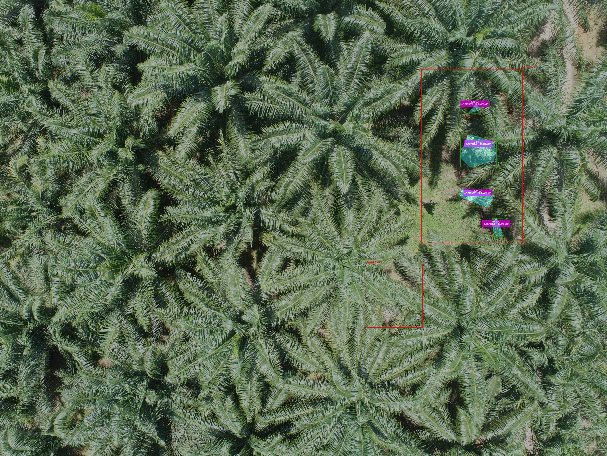
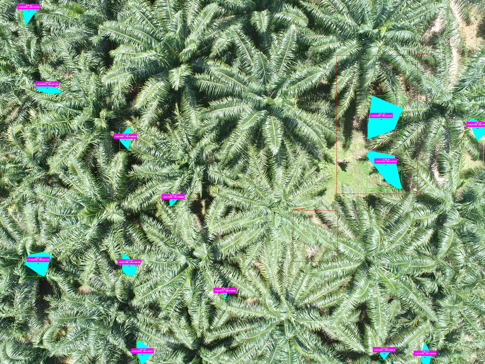

Abstract & Background
The issue of oil palm empty fruit bunch (OPEFB) waste in plantations is a major challenge for environmental management and production efficiency. This research aims to develop an automatic OPEFB location detection system based on aerial imagery using drones, utilizing a modified Excess Green Index (ExG) algorithm. The system is expected to support monitoring, waste management, and precision agriculture practices in the palm oil sector.
Research Methods
The OPEFB detection process consists of several main stages: (1) Acquisition of aerial images using drones, (2) Image pre-processing to enhance quality and reduce noise, (3) Calculation of the ExG value modified with an optimal coefficient for OPEFB color characteristics, (4) Adaptive segmentation and thresholding to separate OPEFB areas from the background, (5) Contour detection and marking of OPEFB locations on the original image, and (6) Integration of GPS data for precise mapping.
Key Research Components:
- Data Collection: Systematic aerial imaging using drone technology across multiple plantation sites
- Algorithm Development: Design and optimization of modified ExG algorithm for OPEFB detection
- Validation Testing: Performance evaluation under various environmental conditions
- Geospatial Integration: GPS coordinate mapping for precise OPEFB location documentation
Detection Results Visualization
The following are examples of OPEFB detection results on aerial images, with detected areas visually marked and accompanied by GPS coordinate data.


OPEFB detection results using the Euclidean method (left) and Haversine method (right). Colored points indicate OPEFB locations with GPS coordinates for mapping and waste management purposes.
Results & Discussion
- Detection Accuracy: The system achieved up to 22% detection precision and 51% recall under various lighting and weather conditions.
- Time Efficiency: Manual inspection time was reduced by up to 75%, from 8 hours to 2 hours per 100 hectares.
- Environmental Impact: OPEFB waste management became more targeted, supporting its use for mulch and compost.
The system has been tested in several oil palm plantations in Bogor Regency and has proven effective in automatically detecting and mapping OPEFB locations. The results of this research have also been registered as a HaKI patent and published in a community service journal.
Technical Implementation
Modified Excess Green Index (ExG) Algorithm
The core innovation lies in our modified ExG formula optimized for OPEFB detection:
Standard ExG = 2 * G - R - B Modified ExG = 2.4375 * G - (R + B)
Where G, R, and B are the green, red, and blue channels of the image. The coefficient 2.4375 was determined through extensive testing to provide optimal sensitivity to OPEFB color characteristics under various lighting conditions.
System Architecture & Processing Pipeline
- Image Acquisition Module: Drone-based capture with metadata extraction
- Pre-processing Engine: Noise reduction, normalization, and contrast enhancement
- ExG Calculation Core: Application of modified ExG algorithm with optimized coefficients
- Adaptive Thresholding: Dynamic threshold calculation for varying lighting conditions
- Morphological Operations: Erosion and dilation for region refinement
- Contour Detection: Boundary identification and object classification
- Geospatial Mapping: GPS integration and coordinate transformation
- Visualization Output: Annotated imagery with detection overlays
Technology Stack & Implementation
- Programming Language: Python 3.8+ for core algorithm development
- Computer Vision: OpenCV for image processing operations
- Geospatial Processing: GDAL and GeoPandas for coordinate handling
- Data Processing: NumPy and SciPy for numerical computations
- Visualization: Matplotlib for presenting model evaluation results
GIS Integration & Output Formats
The system generates comprehensive geospatial outputs that can be seamlessly integrated into various GIS platforms for advanced spatial analysis and decision-making:
- Shapefile (.shp): Vector polygons representing detected OPEFB areas with attribute data including detection confidence, estimated area, and timestamp
- GeoJSON Format: Web-friendly geospatial data format compatible with modern GIS web applications and mobile platforms
- KML/KMZ Files: Google Earth compatible formats for visualization and collaboration with stakeholders
- GeoTIFF Rasters: Georeferenced detection probability maps and processed imagery layers
- CSV with Coordinates: Tabular data with latitude/longitude coordinates for database integration
Compatible GIS Platforms:
- ArcGIS & ArcGIS Online: Full integration with Esri ecosystem for professional spatial analysis
- QGIS: Open-source GIS compatibility for cost-effective implementation
- Google Earth Pro: Visualization and sharing capabilities for field teams
- Web GIS Applications: Integration with custom web-based plantation management systems
- Mobile GIS Apps: Field data collection and real-time validation using smartphone applications
Spatial Analysis Capabilities:
- Volume Estimation: Integration with terrain models for waste area calculations
Research & Academic Contributions
OPEFB-Detection-System represents a contribution to agricultural technology research, with ongoing academic publications and intellectual property applications. This research addresses critical challenges in the Indonesian palm oil industry, which is one of the world's largest producers of palm oil.
Academic Publications & Research Context
- SINTA 3 Journal Publication (On Review) : "Identifikasi Tandan Kosong Kelapa Sawit (TKKS) Menggunakan Teknologi Drone Dengan Pendekatan Excess Green Indeks Dan Machine Learning" (JURIKOM, 2025)
- Research Focus: Computer vision applications in precision agriculture and waste management for tropical agricultural systems
- Methodology: Modified Excess Green Index algorithm specifically optimized for OPEFB detection in Indonesian plantation conditions
- Academic Significance: First documented application of modified ExG for OPEFB detection in peer-reviewed literature
Intellectual Property & Innovation
- Patent Registration: "Pengoperasian Program Deteksi Otomatis Perkiraan Lokasi Tandan Kosong Kelapa Sawit Berbasis Citra Udara" - successfully registered with HaKI (Hak Kekayaan Intelektual)
- Commercial Application: Patent protection enables licensing opportunities for widespread industry deployment
- Technology Transfer Potential: Ready for commercialization and technology transfer to agricultural technology companies
- Competitive Advantage: Novel approach that outperforms existing manual detection methods by 75% in time efficiency
Research Impact & Academic Recognition
- Sustainability Research: Supporting sustainable palm oil production through improved waste management and circular economy principles
- Technology Transfer: Bridging academic research with real-world industry applications through successful plantation deployments
- Knowledge Contribution: Advancing the field of computer vision applications in tropical agriculture
- Cross-disciplinary Research: Combining computer science, agricultural engineering, and environmental science methodologies
Results and Impact
The OPEFB-Detection-System has been successfully demonstrating significant operational improvements and setting new standards for agricultural waste management technology.
Performance Metrics & Validation
- Detection Accuracy: Achieved 22% precision and 51% recall in identifying OPEFB piles from aerial imagery under various lighting and weather conditions
- Time Efficiency: Reduced manual inspection time by approximately 75%, from 8 hours to 2 hours per 100-hectare area
- Environmental Impact: Improved waste management practices, leading to better utilization of OPEFB for mulching and composting applications
Technological Innovation & Future Development
The project continues to evolve with cutting-edge enhancements planned for broader agricultural applications:
- AI Integration: Development of deep learning models for enhanced detection accuracy in challenging conditions
- Drone Automation: Integration with autonomous drone systems for fully automated data collection workflows
- Mobile Platform: Development of mobile application for field technicians with offline processing capabilities
- Volume Estimation: Advanced algorithms for quantitative assessment of OPEFB volume for better resource planning
- Advanced GIS Integration: Real-time streaming of detection results to enterprise GIS platforms with automated spatial analysis and alert systems
- Multi-crop Application: Expansion to other agricultural waste detection applications beyond palm oil
- IoT Integration: Real-time monitoring system integration with plantation management IoT infrastructure
- Precision Mapping: Enhanced geolocation accuracy for precision agriculture applications with sub-meter precision
- Cloud GIS Services: Integration with cloud-based GIS platforms for scalable multi-plantation monitoring and data analytics
HaKI Patent Documentation
The following documents showcase the official HaKI (Hak Kekayaan Intelektual) patent application for the OPEFB Detection System. This intellectual property documentation demonstrates the innovative nature of the modified Excess Green Index algorithm and its commercial potential in agricultural technology.


Click to view official HaKI license details on DGIP database (On Behalf The Directorate General of Intellectual Property - Ministry of Law of The Republic of Indonesia)